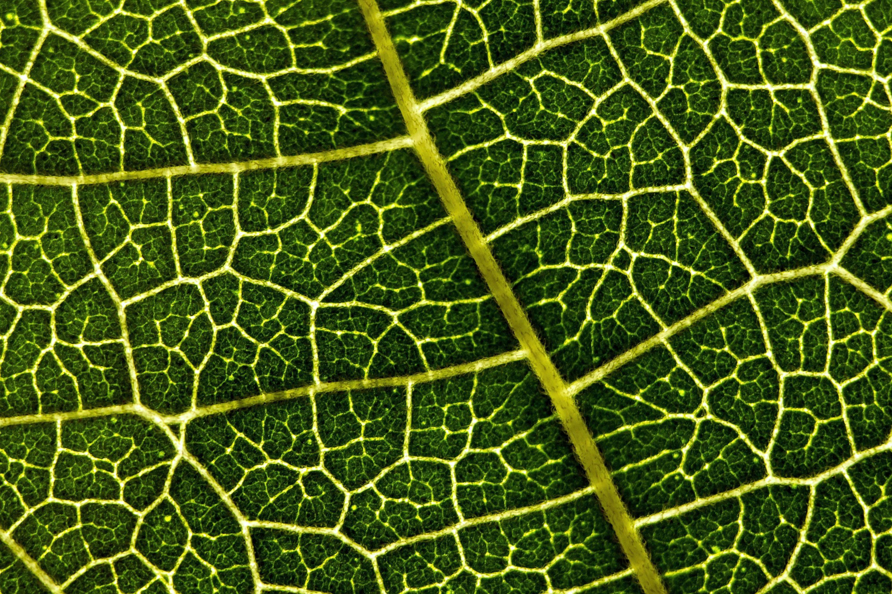

A Fleeting Glimpse
Nature rarely repeats herself. Every sunrise, every shifting shadow in the forest canopy, and every bloom holds a unique signature in time. This space is dedicated to those singular, unrepeatable moments of nature—captured once, remembered forever.
NATURE'S ENGINEERING
The Leaf
Nature's Original Solar Panel
Long before humans discovered electricity, nature had already built the world's most successful solar energy system—the leaf. Every leaf captures sunlight, absorbs carbon dioxide, draws water from its roots, and converts them into food through photosynthesis. It performs this process every day without producing pollution, harmful waste, or greenhouse gases.
Its network of veins carries water and nutrients to every part of the leaf while also providing strength with very little material. Tiny pores called stomata regulate the exchange of gases and help cool the leaf naturally. For millions of years, every forest has quietly demonstrated that energy systems can be efficient, self-regulating, and sustainable.
What Humans Learned
Scientists observed how leaves capture sunlight from different angles, distribute water through branching veins, cool themselves naturally, and keep functioning efficiently in changing weather. These observations helped engineers understand that energy systems can be designed to collect more sunlight, stay cooler, use less material, and perform better by following nature's patterns.
What We Developed
Inspired by the leaf, researchers are developing leaf-shaped and leaf-structured solar photovoltaic panels that can capture sunlight more effectively throughout the day. Leaf-inspired vein networks are also being used to design better cooling systems, lightweight structures, water distribution channels, and self-cleaning surfaces for future solar technologies.
THE CONTINUITY MESSAGE
Nature invented the first solar panel millions of years ago. We are only beginning to understand its design. Every leaf reminds us that the smartest engineering often begins with careful observation of nature.
